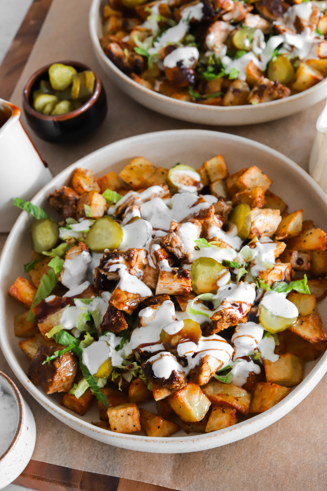
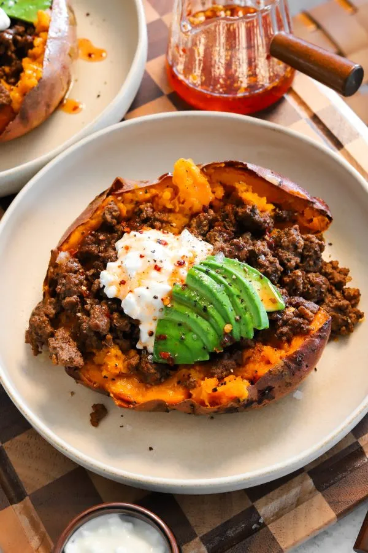

DESSERT
BROWN SUGAR CINNAMON POP-TART COPYCAT
PREP TIME:
1 HOUR 30 MINUTES
COOK TIME:
20 MINUTES
TOTAL TIME:
2 HOURS
YIELDS:
8 POP TARTS
These homemade brown sugar cinnamon Pop-Tarts have the same nostalgic flavor you love but with buttery pastry, a gooey spiced filling, and a maple glaze. They’re fresher, cozier, and so much better than store-bought.
JUMP TO RECIPEYOU MIGHT ALSO LIKE

FRENCH TACOS (BUT NOT REALLY TACOS)

CHICKEN SHAWARMA POTATO BOWLS
